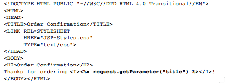

Java Server Pages
Mix static HTML with dynamic content
Use <% java code %>
Use <%= return value %>
Use <% Java statement (scriptlet) %>
Use <%! Declaration (methods, atributes) %>
Test example
Find .java of the jsp
Add "= new java.util.Date()"
Add values for System.getProperty for various system properties such as java.version, java.home, os.name, user.name, user.home, user.dir
Add a comment (<%--comment --%>) and add a System.out.println()
Where does the output show?
write with out.println()
Where does the output go?
Create a table with the numbers from 1 to 10 using a for.
add an italic tag if the number is even
Scriptlets and html can be mixed
Used to import: <%@ page import="java.util.*" %>
Used to include other jsps: <%@ include file="header.jsp" %>
Try <jsp:include page="header.jsp"/>
What happens? how does it behave compared with tpage import?
Add a call to date in header.jsp
Create a UserData bean with username, email and age
Create a jsp to receive the data and save it in a bean
<jsp:useBean id="user" class="test.UserData" scope="session" /> <jsp:setProperty name="user" property="*"/>
Create a jsp that reads the jsp data: using same usea bean and user.getUserName() ...
Write an agenda app that allows to list, show, create and modify contacts, using jsps, servlets, and beans.
Dont forget to use css to make it nice. Remember you can split pages to avoid having repeated code.